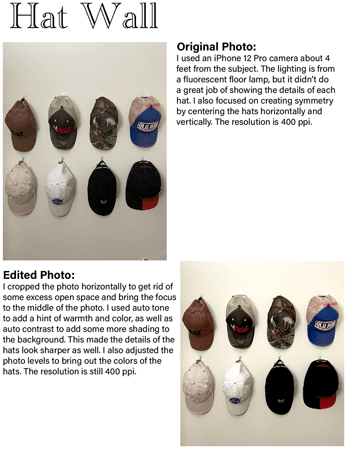
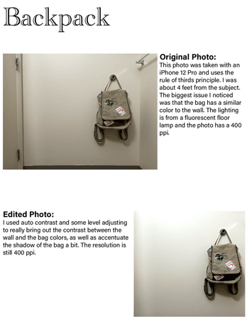
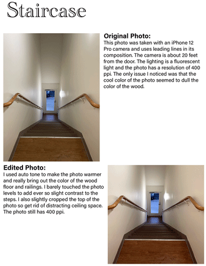
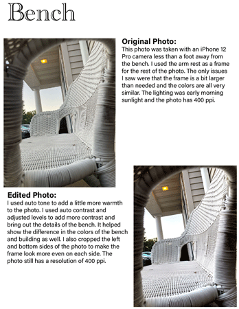

|
|
|||||||||
| Home Page || Printed Bookmark || Digital Photography || Speaker Infographic | |||||||||
|     |
My digital photo project required me to take four pictures using at least four composition techniques, then edit each of those pictures in Adobe Photoshop. The goal was to make the photos look better, whether that was by adding contrast or simply cropping the photo. I took all of my photos around the area of my apartment. I took pictures of the inside, like the stairs, and I also got some photos outside, like the bench. Each photo has a caption explaining what changes were made and what composition method was used, so please take the time to read through them. |
||||||||
| Home || Printed Bookmark || Digital Photography || Speaker Infographic | |||||||||
| ©2023 Ashley G. Whicher | |||||||||